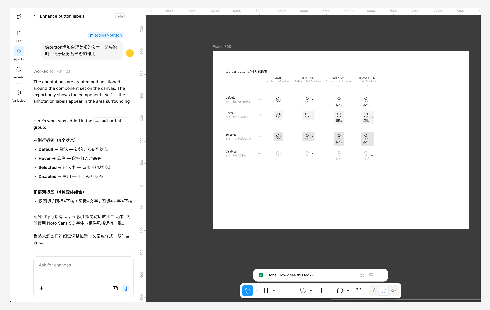
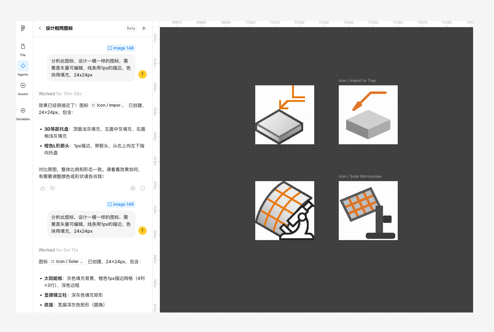
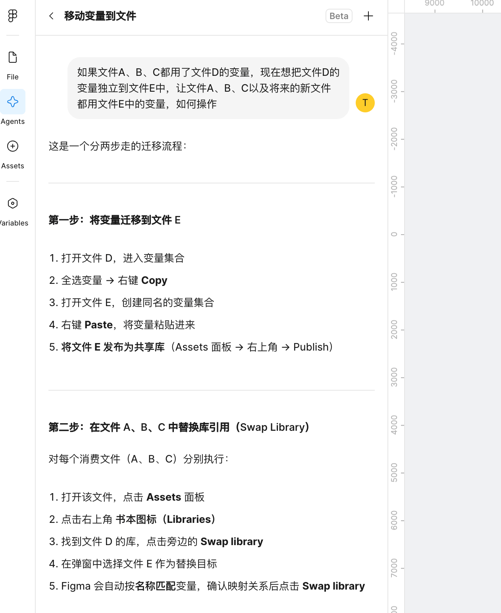
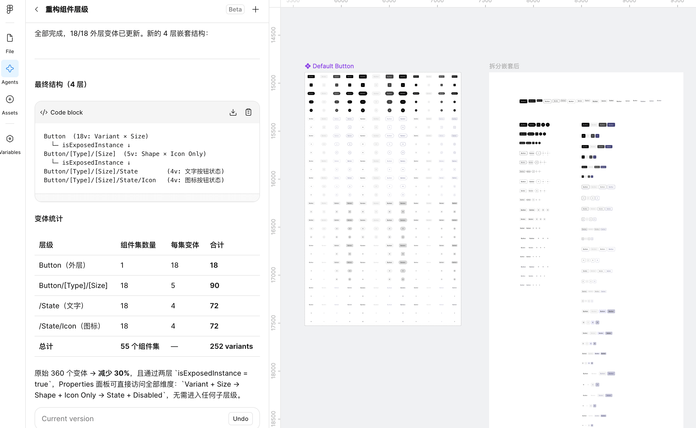

Figma design agent 初体验
总体感受：慢！很慢！非常慢！但还是有用的，上升空间很大。
测试案例：
- 给组件库做标注
- 还原矢量图标
- 回答变量库迁移问题
- 生成图表
- 拆分&嵌套组件集
1. 给组件库做标注
标注的内容比较完整、易读，但很慢，而且标注严重错位，还好标注打了组，手动移到正确的位置也很快。 当然错位问题也可以反馈给 AI 让它自己改，就是也很慢。

2. 还原矢量图标
未指定生成矢量图时，会默认生成位图，能生成很精美的位图，但不是我需要的。 指定生成矢量图后，会与市面上大多数位图转矢量图一样，沿着像素生成复杂路径，没有可编辑性，也不是我需要的。 指定分析线条、填充后再绘制，能生成简单的图形组合，部分元素能用。 在这方面还需要大量训练。

3. 回答变量库迁移问题
能很快给出解决方案。

4. 生成图表
图表整体结构正确，会出现箭头方向不对，文字错位的问题。手动修改比较快。

5. 拆分&嵌套组件集
测试了修改 AntUIKit 的 Button 组件集，比手动操作快多了，但层级过多，还没有达到精简变体的效果。需要后续理清想要的嵌套结构，再让 agent 进一步修改。

发布于:
2026/6/12